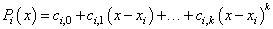

Intel® oneAPI Math Kernel Library Developer Reference - Fortran
Modifies parameters representing a spline in a Data Fitting task descriptor.
status = dfseditppspline1d(task, s_order, s_type, bc_type, bc, ic_type, ic, scoeff, scoeffhint)
status = dfdeditppspline1d(task, s_order, s_type, bc_type, bc, ic_type, ic, scoeff, scoeffhint)
Name |
Type |
Description |
|---|---|---|
task |
TYPE(DF_TASK) |
Descriptor of the task. |
s_order |
INTEGER |
Spline order. The parameter takes one of the values described in table "Spline Orders Supported by Data Fitting Functions". |
s_type |
INTEGER |
Spline type. The parameter takes one of the values described in table "Spline Types Supported by Data Fitting Functions". |
bc_type |
INTEGER |
Type of boundary conditions. The parameter takes one of the values described in table "Boundary Conditions Supported by Data Fitting Functions". |
bc |
REAL(KIND=4) DIMENSION(*) for dfseditppspline1d REAL(KIND=8) DIMENSION(*) for dfdeditppspline1d |
Pointer to boundary conditions. The size of the array is defined by the value of parameter bc_type:
|
ic_type |
INTEGER |
Type of internal conditions. The parameter takes one of the values described in table "Internal Conditions Supported by Data Fitting Functions". |
ic |
REAL(KIND=4) DIMENSION(*) for dfseditppspline1d REAL(KIND=8) DIMENSION(*) for dfdeditppspline1d |
A non-NULL pointer to the array of internal conditions. The size of the array is defined by the value of parameter ic_type:
|
scoeff |
REAL(KIND=4) DIMENSION(*) for dfseditppspline1d REAL(KIND=8) DIMENSION(*) for dfdeditppspline1d |
Spline coefficients. An array of size ny*s_order*(nx-1). The storage format of the coefficients in the array is defined by the value of flag scoeffhint. |
scoeffhint |
INTEGER |
A flag describing the structure of the array of spline coefficients. For valid hint values, see table "Hint Values for Spline Coefficients". The library stores the coefficients in row-major format. The default value is DF_NO_HINT. |
Name |
Type |
Description |
|---|---|---|
status |
INTEGER |
Status of the routine:
|
The editor modifies parameters that describe the order, type, boundary conditions, internal conditions, and coefficients of a spline. The spline order definition is provided in the "Mathematical Conventions" section. You can set the spline order to any value supported by Data Fitting functions. The table below lists the available values:
Order |
Description |
|---|---|
DF_PP_STD |
Artificial value. Use this value for look-up and step-wise constant interpolants only. |
DF_PP_LINEAR |
Piecewise polynomial spline of the second order (linear spline). |
DF_PP_QUADRATIC |
Piecewise polynomial spline of the third order (quadratic spline). |
DF_PP_CUBIC |
Piecewise polynomial spline of the fourth order (cubic spline). |
To perform computations with a spline not supported by Data Fitting routines, set the parameter defining the spline order and pass the spline coefficients to the library in the supported format. For format description, see figure "Row-major Coefficient Storage Format".
The table below lists the supported spline types:
Type |
Description |
|---|---|
DF_PP_DEFAULT |
The default spline type. You can use this type with linear, quadratic, or user-defined splines. |
DF_PP_SUBBOTIN |
Quadratic splines based on Subbotin algorithm, [StechSub76]. |
DF_PP_NATURAL |
Natural cubic spline. |
DF_PP_HERMITE |
Hermite cubic spline. |
DF_PP_BESSEL |
Bessel cubic spline. |
DF_PP_AKIMA |
Akima cubic spline. |
DF_LOOKUP_INTERPOLANT |
Look-up interpolant. |
DF_CR_STEPWISE_CONST_INTERPOLANT |
Continuous right step-wise constant interpolant. |
DF_CL_STEPWISE_CONST_INTERPOLANT |
Continuous left step-wise constant interpolant. |
If you perform computations with look-up or step-wise constant interpolants, set the spline order to the DF_PP_STD value.
Construction of specific splines may require boundary or internal conditions. To compute coefficients of such splines, you should pass boundary or internal conditions to the library by specifying the type of the conditions and providing the necessary values. For splines that do not require additional conditions, such as linear splines, set condition types to DF_NO_BC and DF_NO_IC, and pass NULL pointers to the conditions. The table below defines the supported boundary conditions:
Boundary Condition |
Description |
Spline |
|---|---|---|
DF_NO_BC |
No boundary conditions provided. |
All |
DF_BC_NOT_A_KNOT |
Not-a-knot boundary conditions. |
Akima, Bessel, Hermite, natural cubic |
DF_BC_FREE_END |
Free-end boundary conditions. |
Akima, Bessel, Hermite, natural cubic, quadratic Subbotin |
DF_BC_1ST_LEFT_DER |
The first derivative at the left endpoint. |
Akima, Bessel, Hermite, natural cubic, quadratic Subbotin |
DF_BC_1ST_RIGHT_DER |
The first derivative at the right endpoint. |
Akima, Bessel, Hermite, natural cubic, quadratic Subbotin |
DF_BC_2ST_LEFT_DER |
The second derivative at the left endpoint. |
Akima, Bessel, Hermite, natural cubic, quadratic Subbotin |
DF_BC_2ND_RIGHT_DER |
The second derivative at the right endpoint. |
Akima, Bessel, Hermite, natural cubic, quadratic Subbotin |
DF_BC_PERIODIC |
Periodic boundary conditions. |
Linear, all cubic splines |
DF_BC_Q_VAL |
Function value at point (x0 + x1)/2 |
Default quadratic |
To construct a natural cubic spline, pass these settings to the editor:
DF_PP_CUBIC as the spline order,
DF_PP_NATURAL as the spline type, and
DF_BC_FREE_END as the boundary condition.
To construct a cubic spline with other boundary conditions, pass these settings to the editor:
DF_PP_CUBIC as the spline order,
DF_PP_NATURAL as the spline type, and
the required type of boundary condition.
For Akima, Hermite, Bessel, and default cubic splines use the corresponding type defined in Table Spline Types Supported by Data Fitting Functions.
You can combine the values of boundary conditions with a bitwise OR operation. This permits you to pass combinations of first and second derivatives at the endpoints of the interpolation interval into the library. To pass a first derivative at the left endpoint and a second derivative at the right endpoint, set the boundary conditions to DF_BC_1ST_LEFT_DER OR DF_BC_2ND_RIGHT_DER.
You should pass the combined boundary conditions as an array of two elements. The first entry of the array contains the value of the boundary condition for the left endpoint of the interpolation interval, and the second entry - for the right endpoint. Pass other boundary conditions as arrays of one element.
For the conditions defined as a combination of valid values, the library applies the following rules to identify the boundary condition type:
If not required for spline construction, the value of boundary conditions is ignored.
Not-a-knot condition has the highest priority. If set, other boundary conditions are ignored.
Free-end condition has the second priority after the not-a-knot condition. If set, other boundary conditions are ignored.
Periodic boundary condition has the next priority after the free-end condition.
The first derivative has higher priority than the second derivative at the right and left endpoints.
If you set the periodic boundary condition, make sure that function values at the endpoints of the interpolation interval are identical. Otherwise, the library returns an error code. The table below specifies the values to be provided for each type of spline if the periodic boundary condition is set.
Spline Type |
Periodic Boundary Condition Support |
Boundary Value |
|---|---|---|
Linear |
Yes |
Not required |
Default quadratic |
No |
|
Subbotin quadratic |
No |
|
Natural cubic |
Yes |
Not required |
Bessel |
Yes |
Not required |
Akima |
Yes |
Not required |
Hermite cubic |
Yes |
First derivative |
Default cubic |
Yes |
Second derivative |
Internal conditions supported in the Data Fitting domain that you can use for the ic_type parameter are the following:
Internal Condition |
Description |
Spline |
|---|---|---|
DF_NO_IC |
No internal conditions provided. |
|
DF_IC_1ST_DER |
Array of first derivatives of size n-2, where n is the number of breakpoints. Derivatives are applicable to each coordinate of the vector-valued function. |
Hermite cubic |
DF_IC_2ND_DER |
Array of second derivatives of size n-2, where n is the number of breakpoints. Derivatives are applicable to each coordinate of the vector-valued function. |
Default cubic |
DF_IC_Q_KNOT |
Knot array of size n+1, where n is the number of breakpoints. |
Subbotin quadratic |
To construct a Subbotin quadratic spline, you have three options to get the array of knots in the library:
If you do not provide the knots, the library uses the default values of knots t = {ti}, i = 0, ..., n according to the rule:
t0 = x0, tn = xn-1, ti = (xi + xi-1)/2, i = 1, ..., n - 1.
If you provide the knots in an array of size n + 1, the knots form a non-uniform partition. Make sure that the knot values you provide meet the following conditions:
t0 = x0, tn = xn-1, ti ∈ (xi-1, xi), i = 1,..., n - 1.
If you provide the knots in an array of size 4, the knots form a uniform partition
t0 = x0, t1 = l, t2 = r, t3 = xn - 1, where l ∈ (x0, x1) and r ∈ (xn - 2, xn - 1).
In this case, you need to set the value of the ic_type parameter holding the type of internal conditions to DF_IC_Q_KNOT OR DF_UNIFORM_PARTITION.
Since the partition is uniform, perform an OR operation with the DF_UNIFORM_PARTITION partition hint value described in Table Hint Values for Partition x.
For computations based on look-up and step-wise constant interpolants, you can avoid calling the df?editppspline1d editor and directly call one of the routines for spline-based computation of spline values, derivatives, or integrals. For example, you can call the df?construct1d routine to construct the required spline with the given attributes, such as order or type.
The memory location of the spline coefficients is defined by the scoeff parameter. Make sure that the size of the array is sufficient to hold ny*s_order * (nx-1) values.
The df?editppspline1d routine supports the following hint values for spline coefficients:
Order |
Description |
|---|---|
DF_1ST_COORDINATE |
The first coordinate of vector-valued data is provided. |
DF_NO_HINT |
No hint is provided. By default, all sets of spline coefficients are stored in row-major format. |
The coefficients for all coordinates of the vector-valued function are packed in memory one by one in successive order, from function y1 to function yny.
Within each coordinate, the library stores the coefficients as an array, in row-major format:
c1, 0, c1, 1, ..., c1, k, c2, 0, c2, 1, ..., c2, k, ..., cn-1, 0, cn-1, 1, ..., cn-1, k
Mapping of the coefficients to storage in the scoeff array is described below, where ci,j is the jth coefficient of the function
.
See Mathematical Conventions for more details on nomenclature and interpolants.
If you store splines corresponding to different coordinates of the vector-valued function at non-contiguous memory locations, do the following:
Using the df?editppspline1d task editor, you can provide to the Data Fitting task an already constructed spline that you want to use in computations. To ensure correct interpretation of the memory content, you should set the following parameters:
Spline order and type, if appropriate. If the spline is not supported by the library, set the s_type parameter to DF_PP_DEFAULT.
Pointer to the array of spline coefficients in row-major format.
The scoeffhint parameter describing the structure of the array:
Set the scoeffhint flag to the DF_1ST_COORDINATE value to pass spline coefficients stored at different memory locations. In this case, you can set the parameters that describe boundary and internal conditions to zero.
Before passing an already constructed spline into the library, you should call the dfieditval task editor to provide the dimension of the spline DF_NY. See table "Parameters Supported by the dfieditval Task Editor" for details.
After you provide the spline to the Data Fitting task, you can run computations that use this spline.
You must preserve the arrays bc (boundary conditions), ic (internal conditions), and scoeff (spline coefficients) through the entire workflow of the Data Fitting computations for a task, as the task stores the addresses of the arrays for spline-based computations.